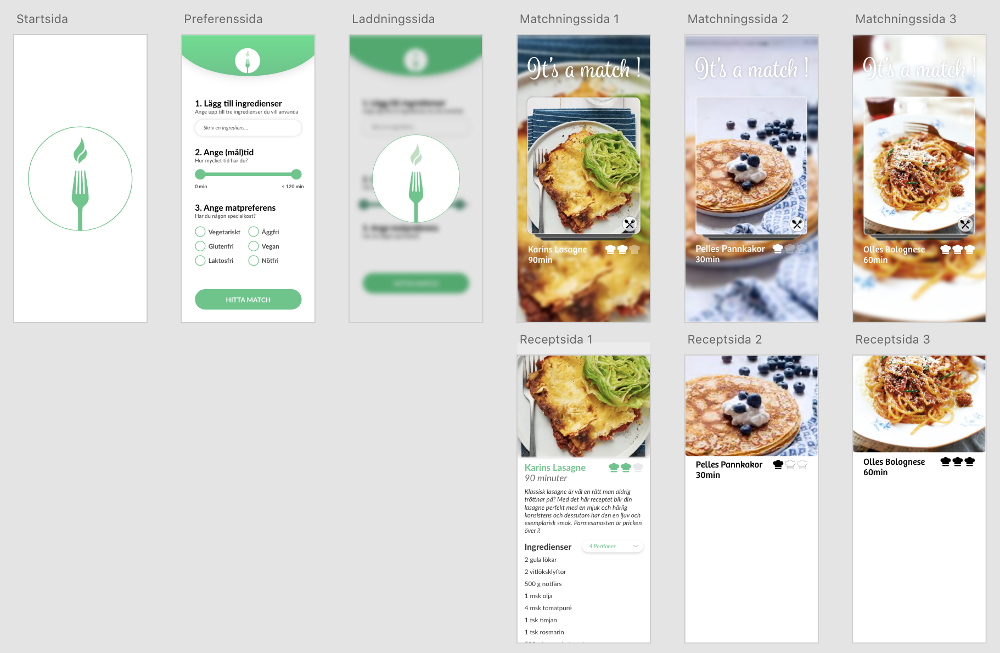

Summary
The application MatKOMA is a recipe swiping app with an environmental focus. The app starts with a menu where the user specifies which ingredients they have at home and want to use before they turn bad, if they have any dietary restrictions and how much time they have for cooking. The app then provides recipe matches for the user that can choose to either swipe up to get the recipe and instructions or swipe away the card for a new suggestion.
The application was implemented as a part of a course in communication and user interfaces at Linköping University and a lot of time was spent on creating prototypes and performing user testing, as well as analysing how to integrate Norman's design principles.
The project was developed using React, and the prototypes was created in Figma and Adobe XD. The project was performed as a group of 6 persons and I was part of the group that focused on design and prototypes but I also coded one of the React modules (button interaction).
Prototype work in Figma
After a first low-fi model on paper, we started working on a Figma prototype of the application. As can be seen, the first model was quite simpel and we first had an idea of saving the recipes but then decided that we wanted a more linear search process and this was removed in the later models.
The first user tests was performed and the prototype was remade in Figma again. I created a first version of a logotype and the application had more focus on the matching page than before.
After the second prototype, the group decided to switch to Adobe XD since we felt that Figma did not provide us with all the necessary features that we wanted to perform optimal user testing of the swiping function.
Prototype in Adobe XD
When switching prototype software, the group got the possibility to rethink the whole design and the new prototype was much simpler but clearer. A new logotype was created and except for the preference side, the swiping of recipes was the core.
The next prototype had much more details in the remake. Smoother shapes and a mapping to difficulty of recipe was introduced in the shape of chef hats.
With the second prototype in Adobe XD, the group found the application to be pretty close to what the group was aiming for. The next change was to further introduce some more environmental focus in the application that can be seen in the green color scheme and a carbon dioxide label on each recipe.
Finalized application
The finalized application was coded using React and was successfully created into a desktop and mobile adjusted application and the result can be seen below.
 Preference page and matching page
Preference page and matching page